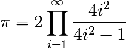

Controla el orden en el que se ejecuta el código.
>>> if 2**2 == 4:
... print 'Obvio!'
...
Obvio!
>>> a = -1
>>> if a > 0:
... print 'Número positivo'
... else:
... print 'Número negativo'
...
Número negativo
Los bloques de código son delimitados por indentación
Truco
Escriba las siguientes líneas en el intérprete de Python, y tenga cuidado respecto a la profundidad de indentación. El shell IPython automáticamente aumenta la profundidad de indentado una columna después del signo :, para disminuir la profundidad de indentado, presione la tecla de retroceso o la flecha izquierda. Pulse la tecla Intro dos veces para salir del bloque lógico.
In [1]: a = 10
In [2]: if a == 1:
...: print 1
...: elif a == 2:
...: print 2
...: else:
...: print('Diferente de 1 y 2')
...:
Diferente de 1 y 2
La indentación es obligatoria en scripts. Como ejercicio, reescriba la líneas anteriores en el script indentado.py y ejecutelo en IPython usando run.
Iterando con indices:
>>> for i in range(4):
... print(i)
0
1
2
3
A menudo, el código es más legible si se itera sobre valores:
>>> for palabra in ('interesante', 'poderoso', 'legible'):
... print('Python es %s' % palabra)
Python es interesante
Python es poderoso
Python es legible
Bucle while al estilo C (problema de Mandelbrot):
>>> z = 1 + 1j
>>> while abs(z) < 100:
... z = z**2 + 1
>>> z
(-134+352j)
Características más avanzadas
break sale del bucle encerrado por for/while:
>>> z = 1 + 1j
>>> while abs(z) < 100:
... if z.imag == 0:
... break
... z = z**2 + 1
continue la siguiente iteración de un bucle.:
>>> a = [1, 0, 2, 4]
>>> for element in a:
... if element == 0:
... continue
... print 1. / element
1.0
0.5
0.25
| if <OBJECT>: |
|
|---|---|
| a == b: | Prueba de igualdad, con operadores lógicos: >>> 1 == 1.
True
|
| a is b: | Prueba de identidad: ambos lados son el mismo objeto: >>> 1 is 1.
False
>>> a = 1
>>> b = 1
>>> a is b
True
|
| a in b: | Para todas las colecciones b: b contiene a >>> b = [1, 2, 3]
>>> 2 in b
True
>>> 5 in b
False
Si b es un diccionario, se prueba si a es un clave en b. |
Se puede iterar sobre una secuencia (cadenas, listas, claves en un diccionario, lineas en un archivo, ...):
>>> vocales = 'aeiou'
>>> for i in 'poderoso':
... if i in vocales:
... print i,
o e o o
>>> mensaje = "Hola como estas?"
>>> mensaje.split() # devuelve una lista
['Hola', 'como', 'estas?']
>>> for palabra in mensaje.split():
... print palabra
...
Hola
como
estas?
Truco
Pocos lenguajes (en particular, los lenguajes de computación científica) permiten bucles sobre cualquier cosa menos sobre enteros/índices. Con Python es posible hacer un bucle sobre los objetos de interés sin preocuparse por los índices que a menudo no importan. Esta característica hace al código más legible.
Advertencia
No es seguro modificar la secuencia que se está iterando.
Una tarea común es iterar sobre una secuencia mientras se enumera los elementos.
Puede utilizarse un bucle while con un contador como el ejemplo anterior. O un bucle for:
>>> palabras = ('interesante', 'poderoso', 'legible')
>>> for indice in range(0, len(palabras)):
... print indice, palabras[indice]
0 interesante
1 poderoso
2 legible
Pero, Python provee la palabra clave enumerate:
>>> for indice, elemento in enumerate(palabras):
... print indice, elemento
0 estupendo
1 poderoso
2 legible
Use iteritems:
>>> d = {'a': 1, 'b':1.2, 'c':1j}
>>> for clave, valor in d.iteritems():
... print('Clave: %s con valor: %s' % (clave, valor))
Clave: a con valor: 1
Clave: c con valor: 1j
Clave: b con valor: 1.2
>>> [elemento**2 for elemento in range(4)]
[0, 1, 4, 9]
Ejercicio
Calcular los decimales de Pi usando la formula de Wallis:
